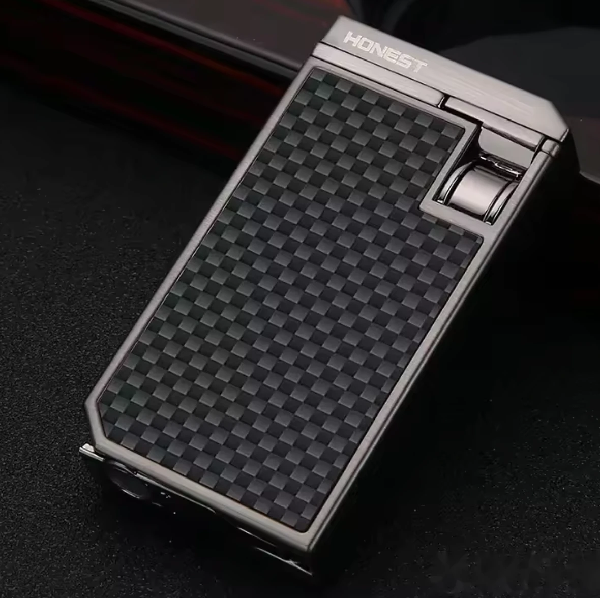
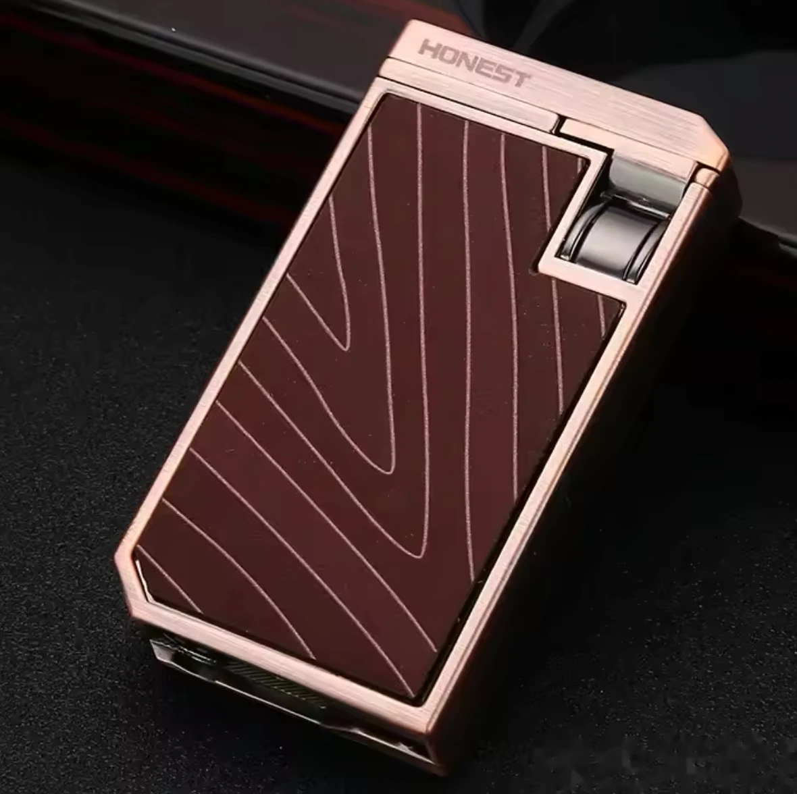
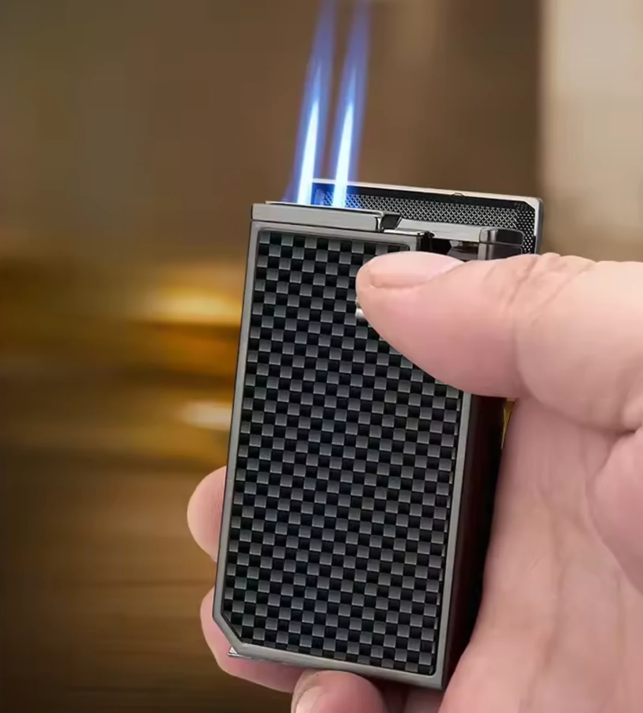
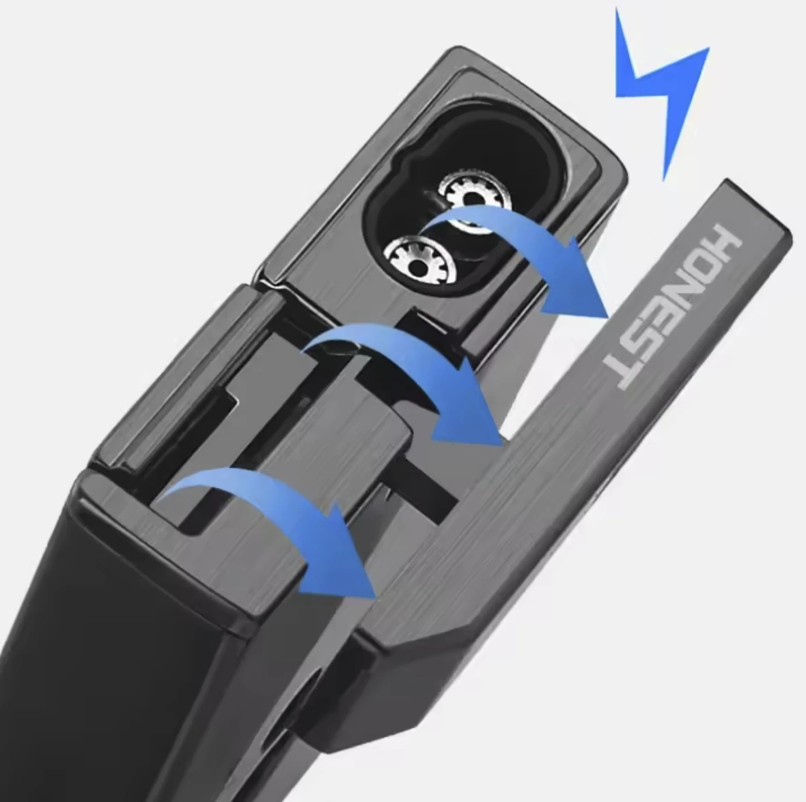
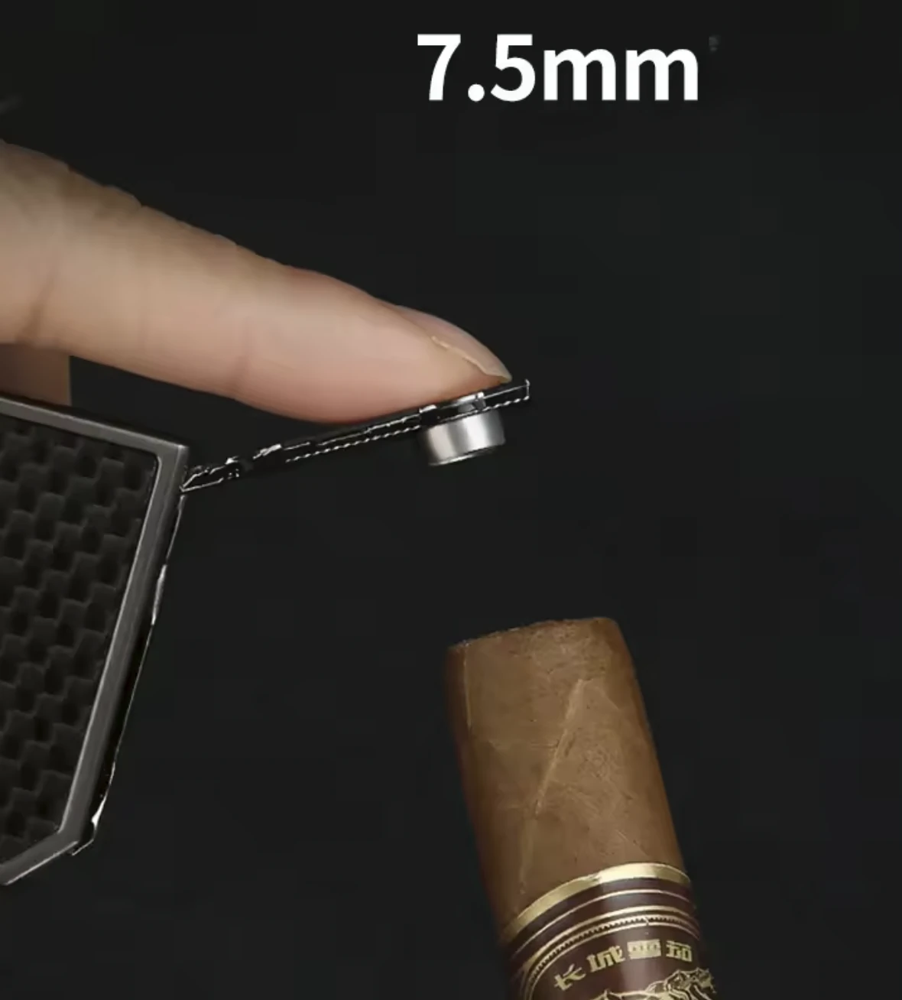

Encendedores · Artículo documentado
Encendedor HONEST de doble flama con cortador punch
Encendedor metálico HONEST recargable con gas butano, con dos flamas tipo jet y cortador punch integrado para preparar la punta del puro. Su diseño compacto combina acabado metálico con panel decorativo y se presenta en colores negro y rojo.
Disponibilidad prevista: enero de 2027
Características descritas
- Dos flamas jet para el encendido
- Cortador punch integrado y desplegable
- Recargable con gas butano
- Cuerpo metálico con panel frontal decorativo
- Acabados: negro y rojo
Acabados descritos: Negro y Rojo. Las existencias por acabado están pendientes.
Disponibilidad prevista para enero de 2027. Esta página presenta el producto y no procesa pagos directamente; consulta existencias por WhatsApp.




